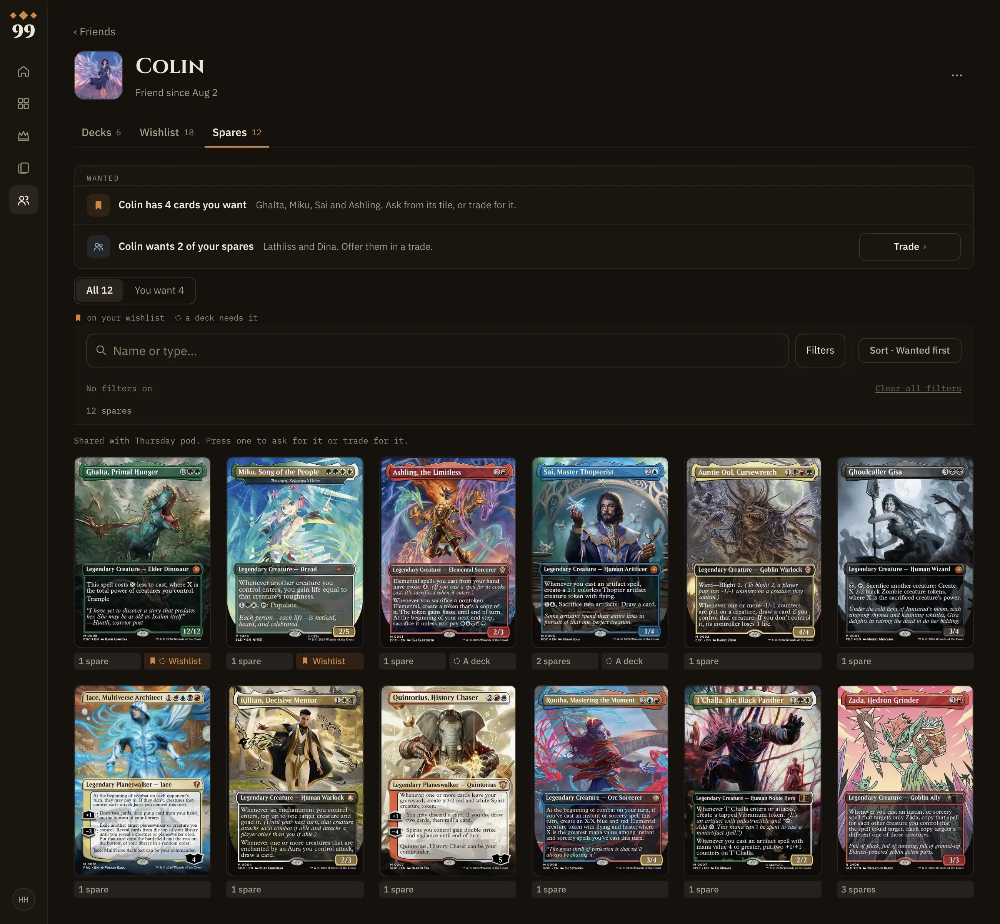
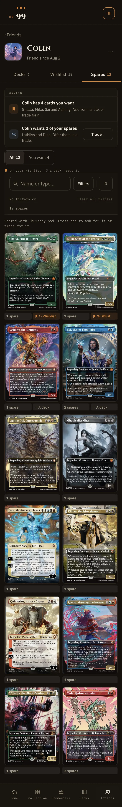
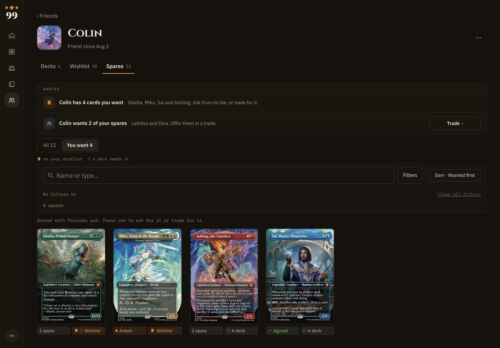
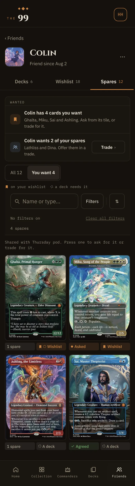
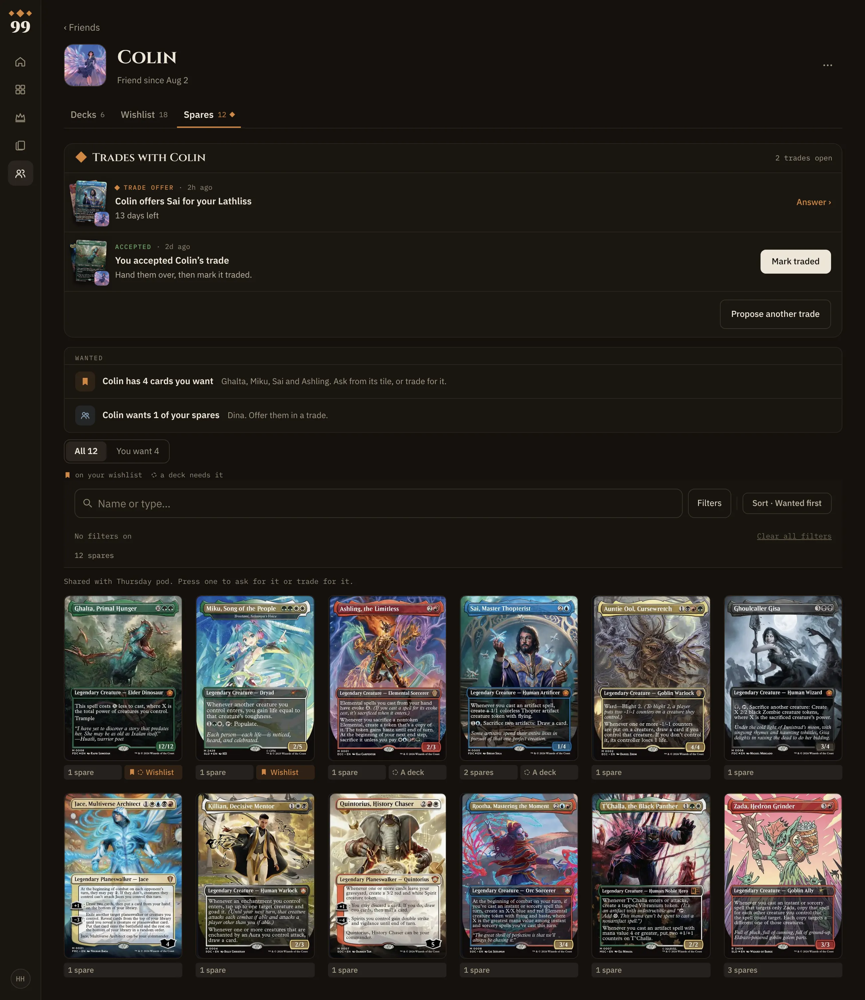
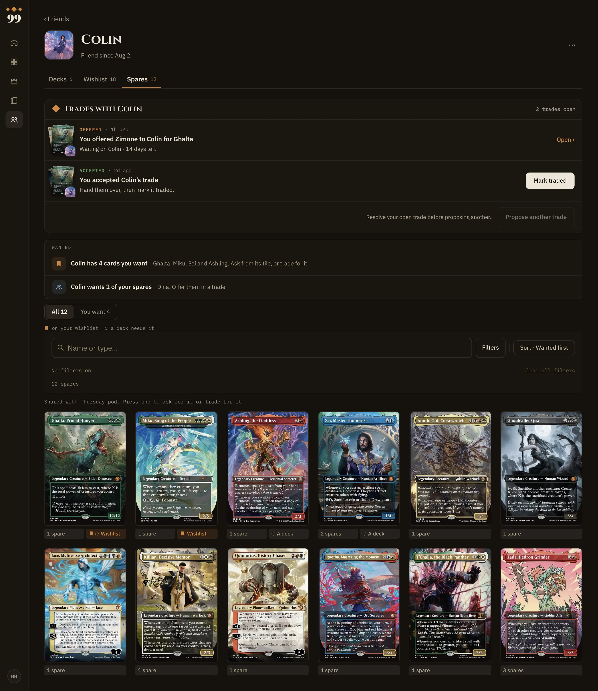
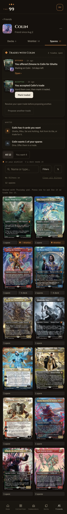

HANDOFF · 2026-11-27
A friend's Spares tab
Trades live on the friend's Spares tab; there is no Trade tab. The strip stays Decks, Wishlist, Spares. Top to bottom: the Trades with Colin box (only when a trade is live), the Wanted call-out (the Wishlist tab's You have it parts), the All / You want switch with the key line, the shipped search, Filters and Sort, then the tiles. A tile ends in at most two half-width chips: a gray count with no icon ('1 spare', Collection's quantity ink), and why you want it ('Wishlist' with a bookmark, plus a dashed dot when a deck also needs it; or 'A deck' with the dashed dot). While your ask is open, or after a yes, the count chip says 'Asked' (accent) or 'Agreed' (success) instead.
S0 · Colin's Spares tab, no trade yet
Wanted: 'Colin has 4 cards you want' (bookmark) and 'Colin wants 2 of your spares' (two-people glyph in fact blue) with a Trade press. All 12.
S0 · DESKTOP

S0 · PHONE

S0w · You want · 4, with asks
The switch on You want. Miku: Asked | Wishlist. Sai: Agreed | A deck.
S0w · DESKTOP

S0w · PHONE

S4 · With trades open
Trades with Colin heads the tab: one row per live trade (TradeRows), each with its press. Foot: Propose another trade.
S4 · DESKTOP

S4 · PHONE
S9 · Your offer is waiting (the cap)
One unanswered offer per friend (Q10). Propose another trade is held, with 'Resolve your open trade before proposing another.' Accepted trades don't count toward the cap.
S9 · DESKTOP

S9 · PHONE
